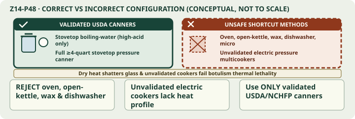

Z14-P48 · Food production and preservation · New manuscript
Reject oven, open-kettle, dishwasher, microwave, and unvalidated multicooker canning
Eliminate popular online and heirloom canning shortcuts that fail to sterilize jars and cause botulism or exploding glass.
When it applies · Method and equipment selection for all home food preservation.
Equipment · Validated stovetop boiling-water canner, validated atmospheric steam canner (high-acid only), or validated stovetop dial/weighted-gauge pressure canner (≥4-quart-jar capacity).

Actions
- STRICTLY REJECT oven canning (dry air conducts heat poorly compared to steam/water and regular Mason jars shatter violently in dry ovens), open-kettle/inversion canning (pouring hot food into jars and flipping upside down fails to destroy molds/yeasts/spores and produces weak false seals), dishwasher canning, and microwave canning.[P20, P07]
- Do NOT use consumer electric pressure multicookers (e.g., Instant Pot models not independently validated to USDA thermal-process standards) or small stovetop pressure saucepans for low-acid home canning—USDA/NCHFP requires a full-sized pressure canner holding at least four quart jars because small pots heat up and cool down too quickly to achieve the validated cumulative heat lethality.[P20, P07]
- Do NOT seal jars with melted paraffin wax (allows mold growth and mycotoxins)—use standard two-piece vacuum metal canning lids with tested thermal processing exclusively.[P20, P09]
Failure recognition · Using an unvalidated countertop electric multicooker or flipping hot jam jars upside down on the counter instead of proper thermal processing.[P20, P07]
Verify · Confirm equipment is a validated stovetop boiling-water canner or full-size ≥4-quart-capacity pressure canner matching the tested recipe.[P20, P07]
Stop or change course · Any recipe calling for oven, open-kettle, wax-seal, or unvalidated multicooker canning must be rejected immediately.[P20]
Evidence and editorial notes
- P07 · NCHFP · Using Pressure Canners (current web edition)
- Section: Using Pressure Canners > Low-Acid Foods, Venting, and Gauge Accuracy · Conditions: Low-acid foods (pH > 4.6: meats, poultry, seafood, most vegetables, soups)
Support: Process all low-acid foods strictly in a validated pressure canner (NOT a boiling-water canner, electric multicooker unless independently validated, or oven), vent steam steadily for 10 full minutes before pressurizing, maintain target pressure for the full altitude-adjusted time, and test dial gauges annually.
Limitations: Dropping pressure mid-cycle requires bringing pressure back up and restarting the entire processing timer from zero. · Conflicting evidence: Refutes myths that prolonged boiling-water processing destroys C. botulinum spores.
Editorial note: Core low-acid botulism-prevention boundary in Z14. · Specialist reviewer: Food microbiology and Extension preservation specialist
Primary source · checked 2026-11-24 - P09 · NCHFP · Using Pressure Canners (current web edition)
- Section: Headspace, Jar Preparation, Two-Piece Lids, and Cooling Seals · Conditions: Mason-type canning jars with two-piece metal lids and screw bands
Support: Use true canning jars (never commercial mayonnaise jars), leave exact recipe headspace, remove trapped air bubbles, wipe jar rims clean, tighten bands fingertip-tight only, and let jars cool undisturbed 12–24 hours before checking vacuum seals and removing rings for storage.
Limitations: Inverting jars, tightening bands after cooling, or re-using flat sealing lids causes seal failure and silent spoilage. · Conflicting evidence: None; directly targets top home-canning mechanical failures.
Editorial note: Grounds jar-seal mechanics and inspection cards in Z14. · Specialist reviewer: Food preservation specialist
Primary source · checked 2026-11-24 - P20 · USDA / NCHFP · USDA Complete Guide to Home Canning (2015 / current NCHFP edition)
- Section: Unsafe/Unvalidated Canning Methods to Reject · Conditions: Home food preservation equipment and method selection
Support: Reject oven canning, open-kettle canning, dishwasher canning, microwave canning, and unvalidated electric multicooker pressure canning; dry heat and unpressurized jars fail to destroy C. botulinum spores and risk glass shattering.
Limitations: Only independently validated USDA/NCHFP thermal processes establish safe shelf-stable canning. · Conflicting evidence: Directly refutes popular social-media and vintage canning shortcuts.
Editorial note: Hard-stop method-rejection card evidence across Z14. · Specialist reviewer: Food preservation process authority
Primary source · checked 2026-11-24
Source lineage · USDA Complete Guide to Home Canning; new manuscript · Classification · New manuscript.